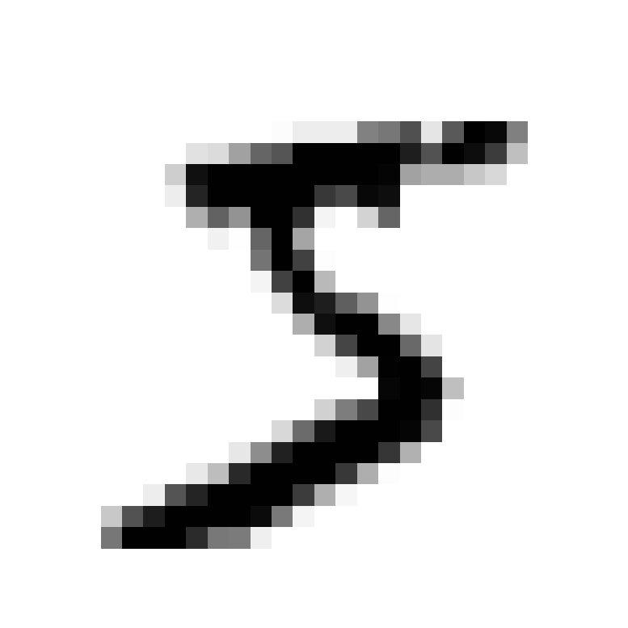
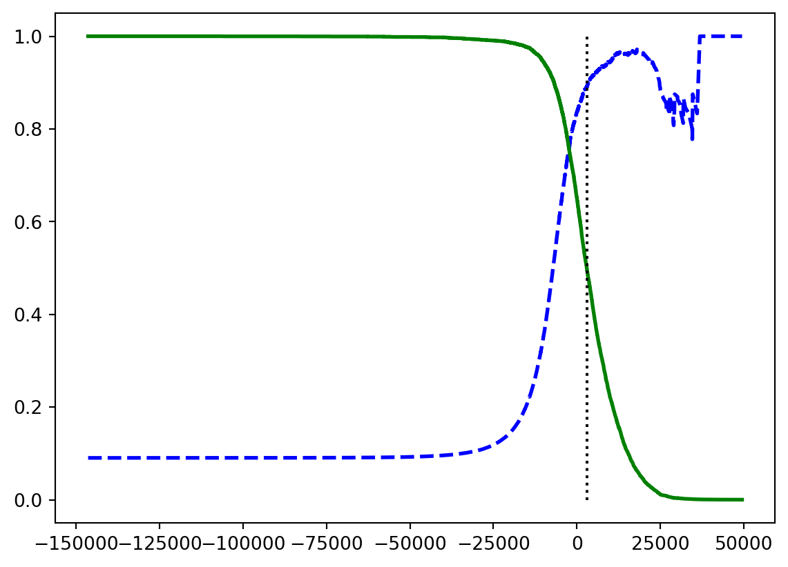
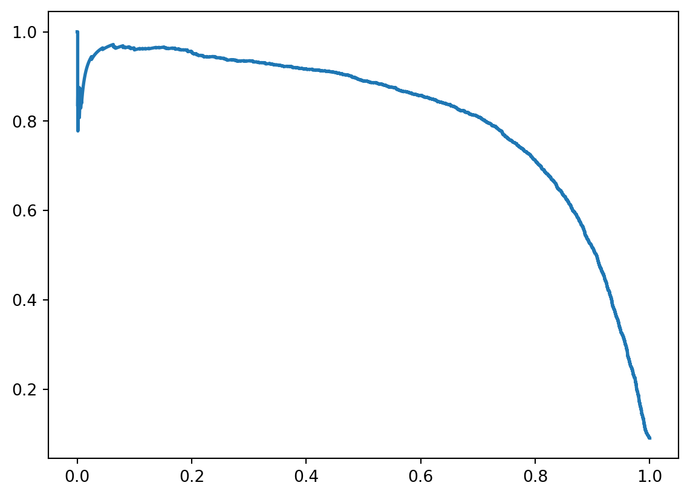

from sklearn.datasets import fetch_openml
mnist = fetch_openml("mnist_784", as_frame=False)MNIST Classification Task
We will use the dataset from OpenMl which is a website with multiple ML datasets and API’s at which you can use.
We say as_frame=False here because the mnist dataset contains images which isn’t very dataframe compatible. We can instead work with images which are represented by bitmaps.
sklearn.datasets
There are mainly three types of functions available from this submodule: 1. fetch_* - loads real-world datasets 2. load_* - returns toy datasets 3. make_* - returns (X,y) tuple of data
X,y = mnist.data, mnist.target
print(X.shape)
print(y.shape)(70000, 784)
(70000,)How to view images
import matplotlib.pyplot as plt
def plot_digit(image_data):
image = image_data.reshape(28,28)
plt.imshow(image, cmap="binary")
plt.axis("off")
digit = X[0]
plot_digit(digit)
plt.show()
splitting into test and training sets
The mnist data is already split into a train and test set which has been shuffled for us. This helps out since it guarantees cross validation will be similar
X_train, X_test, y_train, y_test = X[:60000], X[60000:], y[:60000], y[60000:]Training a Binary Classifier
Before we do crazy shit by predicting the exact digit, let’s simplify by just predicting a single digit.
Our chosen digit will be 5.
This is computationally less expensive and less effort than using a more complex model like a neural network. Our chosen model will be Stochastic Gradient Descent.
y_train_5 = (y_train == '5')
y_test_5 = (y_test == '5')from sklearn.linear_model import SGDClassifier
sgd_clf = SGDClassifier(random_state=42)
sgd_clf.fit(X_train, y_train_5)SGDClassifier(random_state=42)In a Jupyter environment, please rerun this cell to show the HTML representation or trust the notebook.
On GitHub, the HTML representation is unable to render, please try loading this page with nbviewer.org.
Parameters
| loss | 'hinge' | |
| penalty | 'l2' | |
| alpha | 0.0001 | |
| l1_ratio | 0.15 | |
| fit_intercept | True | |
| max_iter | 1000 | |
| tol | 0.001 | |
| shuffle | True | |
| verbose | 0 | |
| epsilon | 0.1 | |
| n_jobs | None | |
| random_state | 42 | |
| learning_rate | 'optimal' | |
| eta0 | 0.0 | |
| power_t | 0.5 | |
| early_stopping | False | |
| validation_fraction | 0.1 | |
| n_iter_no_change | 5 | |
| class_weight | None | |
| warm_start | False | |
| average | False |
sgd_clf.predict([digit])array([ True])Measuring the Model Performance
Evaluating a classifier is trickier than a regressor and there are a bunch of concepts to understand.
Measuring Accuracy using Cross-Validation
from sklearn.model_selection import cross_val_score
cross_val_score(sgd_clf, X_train, y_train_5, cv=3, scoring="accuracy")array([0.95035, 0.96035, 0.9604 ])This looks good as we have above 95% accuracy for all folds but we shouldn’t get too excited by this just yet. First let’s look at whether the DummyClassifier gives the same results.
from sklearn.dummy import DummyClassifier
dummy_clf = DummyClassifier()
dummy_clf.fit(X_train, y_train_5)
print(any(dummy_clf.predict(X_train)))FalseNo 5’s are detected by our dummy classifier so let’s check the CV score:
cross_val_score(dummy_clf, X_train, y_train_5, cv=3, scoring="accuracy")array([0.90965, 0.90965, 0.90965])We now have 90% accuracy. This is simply becuase only 10% of the images are 5’s so you have some imbalanced data which means you have a 90% chance of predicting not 5 and being correct.
A better way to evaluate such skewed data is with a Confusion Matrix.
Confusion Matrices
The main purpose of Confusion Matrices is to check the False Positives and False Negatives of a classifier compared to True Positives and -Negatives.
from sklearn.model_selection import cross_val_predict
from sklearn.metrics import confusion_matrix
y_train_pred = cross_val_predict(sgd_clf, X_train, y_train_5, cv=3)
cm = confusion_matrix(y_train_5, y_train_pred)
print(cm)[[53892 687]
[ 1891 3530]]This block here returns a predicted values list which still implements cross- validation which we use in our confusion matrix.
| Predicted: Not 5 | Predicted: Is 5 | |
|---|---|---|
| Actual: Not 5 | 53892 | 687 |
| Actual: Is 5 | 1891 | 3530 |
From the confusion matrix, we can derive precision and recall metrics.
\[ precision = \frac{TP}{TP+FP} \]
alongside this, we calculate the recall rate which is also called the sensitivity and the true positive rate.
\[ recall = \frac{TP}{TP+FN} \]
Scikit-Learn has metrics as well to predict precision and recall such as:
from sklearn.metrics import precision_score, recall_score
precision_score(y_train_5, y_train_pred)
recall_score(y_train_5, y_train_pred)0.6511713705958311Combining Precision and Recall
Its often more convenient to combine the metricxs into a single more intepretable metric like the F1-score which is the harmonic mean between the two metrics:
\[ \begin{align} F_1 =& \frac{2}{\frac{1}{precision}+\frac{1}{recall}} \\ =& 2 \times \frac{precision \times recall}{precision \times recall} \\ =& \frac{TP}{TP+\frac{FN+TP}{2}} \end{align} \]
from sklearn.metrics import f1_score
f1_score(y_train_5, y_train_pred)0.7325171197343847[!Tip] F1 isn’t perfect F1 score favors classifiers with similar precision and recall. Sometimes you care more about one metric than another.
[!Example] Predicting Child Safe Videos You would care more about high precision since rejecting a few good vidoes are fine as long as no bad ones slips out, i.e. low recall
[!Example] Predicting Shoplifters You would rather have high recall such that no false negatives slips out. This would cause false alarms but that’s better than the alternative
Both of these examples shows the importance of understanindg the data you’re working with.
The Precision/Recall Trade-off
{kind=link}
Each instance is determined as either positive or negative by the decision function of the classifier. Increasing the threshold would increase recall but lower percision and vice versa.
Using scikit-learn’s predict() function for a classifier directly doesn’t let you set the threshold but we can use the decision_function() of a classifier and set the threshold manually like this:
y_scores = sgd_clf.decision_function([digit])
threshold = 0
y_digit_pred = (y_scores > threshold) # Gives same result as normal predict
threshold = 3000
y_digit_pred = (y_scores > threshold)Using CV with Precision Functions
We can use cross_val_predict but instead of the method being predict, we can use decision_function
from sklearn.metrics import precision_recall_curve
y_scores = cross_val_predict(sgd_clf, X_train, y_train_5, cv=3,
method="decision_function")
precisions, recalls, thresholds = precision_recall_curve(y_train_5, y_scores)
plt.plot(thresholds, precisions[:-1], "b--", label="Precision",linewidth=2)
plt.plot(thresholds, recalls[:-1], "g-", label="Recall",linewidth=2)
plt.vlines(threshold, 0,1.0, "k", "dotted", label="threshold")
plt.show()
plt.plot(recalls, precisions, linewidth=2,label="Precision/Recall Curve")
plt.show()